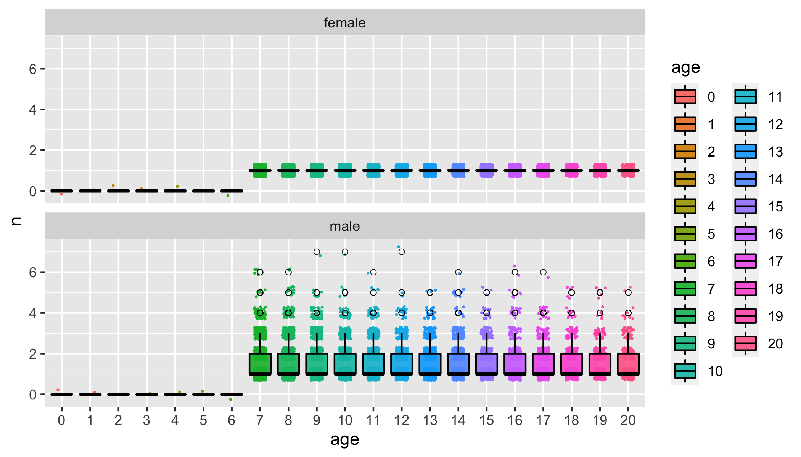

using-other-simulation-programs.RmdCKMRpop was developed to crunch and slurp the output of the
simulation package spip; however other programs can be
configured to produce the output needed for CKMRpop to create the
summaries that it does.
Currently, the files of massaged spip output that CKMRpop uses look
like the following (each file’s name is listed between
==> XXX <== markers, and then the first 10 lines of
the file are shown).
% head spip*.tsv
==> spip_deaths.tsv <==
ID year age
M3_0_0 5 2
M3_0_4 5 2
M3_0_5 5 2
M3_0_10 5 2
M3_0_13 5 2
M3_0_16 5 2
M3_0_18 5 2
M3_0_20 5 2
M3_0_21 5 2
==> spip_genotypes.tsv <==
F5_0_100 2/2
M5_0_84 1/1
M7_0_1 1/1
M7_0_92 1/1
F8_0_85 1/2
F8_0_95 2/2
M8_0_51 1/1
M8_0_56 2/2
M8_0_91 2/1
F9_0_17 1/1
==> spip_migrants.tsv <==
year age event
5 1 M4_0_6 0 -> 2
5 1 M4_0_11 0 -> 1
5 1 M4_0_12 0 -> 1
5 1 M4_0_19 0 -> 1
5 1 M4_0_20 0 -> 1
5 1 M4_0_28 0 -> 1
5 1 M4_0_29 0 -> 1
5 1 M4_0_43 0 -> 1
5 1 M4_0_44 0 -> 1
==> spip_pedigree.tsv <==
year pop kid pa ma
0 0 M0_0_0 0 0
0 0 M0_0_1 0 0
0 0 M0_0_2 0 0
0 0 M0_0_3 0 0
0 0 M0_0_4 0 0
0 0 M0_0_5 0 0
0 0 M0_0_6 0 0
0 0 M0_0_7 0 0
0 0 M0_0_8 0 0
==> spip_postkill_census.tsv <==
year pop age male female
5 0 1 99 101
5 0 2 78 90
5 0 3 66 73
5 0 4 52 55
5 0 5 49 50
5 1 1 142 136
5 1 2 94 87
5 1 3 70 70
5 1 4 54 57
==> spip_prekill_census.tsv <==
year pop age male female
5 0 1 99 101
5 0 2 125 125
5 0 3 87 87
5 0 4 70 70
5 0 5 56 56
5 1 1 142 136
5 1 2 125 125
5 1 3 87 87
5 1 4 70 70
==> spip_samples.tsv <==
ID syears_pre pop_pre syears_post pop_post syears_dur pop_dur
F5_0_100 10 0
M5_0_84 10 0
M7_0_1 12 0
M7_0_92 11 0
F8_0_85 11 0
F8_0_95 10 0
M8_0_51 10 0
M8_0_56 13 0
M8_0_91 10 0The structure of the files is largely self-explanatory, but here are a few pertinent notes:
The IDs of the individuals are of the form:
Sex + BornYear + "_" + Subpop_Index + "_" + AnInteger. So,
for example, F8_0_85 is a female (with ID 85) born in year
8. Some functions within CKMRpop parse these IDs to retrieve the sex and
birth year of the individual.
The files are TAB-delimited.
Migration events are recorded as space-delimited phrases like:
M4_0_6 0 -> 2, which says that M4_0_6
migrated from subpopulation 0 to subpopulation
2.
The pedigree must be the complete pedigree of the population.
In order to use a different simulation program, one approach is to simply write out output files like the above from the simulation output of your simulation engine of choice. Another possibility is to use the internal pedigree recording mechanism (if it exists) of your preferred simulation program.
I illustrate these two different approaches in the following two section using the outstanding, full-featured, and well-supported population genetic simulation software, SLiM Version 3 (Haller and Messer 2019).
Before doing anything else here, let us load some useful libraries:
library(CKMRpop)
library(dplyr)
#>
#> Attaching package: 'dplyr'
#> The following objects are masked from 'package:stats':
#>
#> filter, lag
#> The following objects are masked from 'package:base':
#>
#> intersect, setdiff, setequal, union
# also define a variable that says whether or not we should evaluate
# code chunks that depend on having SLiM installed on the system.
eval_slim_dep <- FALSE # file.exists("/usr/local/bin/slim") # SLIM 4 has broken this a little. Must fixBy way of example, here I devise a simulation in SLiM, Version 3.6,
that approximates the species_1_simulation in the other
vignette. It approximates it in the sense that the maximum age and the
survival probabilities are similar between the two simulations; however
I did not spend a lot of time tweaking the SLiM script to have
overdispersion in family sizes, or a mating pattern that looks like what
is coded up in spip in the other vignette.
This SLiM script can be found in the package extras at:
system.file("SLiM/slim-example-1.slim", package = "CKMRpop")It looks like this:
initialize() {
initializeSLiMModelType("nonWF");
defineConstant("K", 1290);
// "species 1" mortality rates for ages 0 to 20. (All 20-year-olds die)
defineConstant("L", c(0.25, 0.24, 0.24, 0.23, 0.23, 0.22, 0.22, 0.21, 0.21, 0.2, 0.2, 0.2, 0.19, 0.19, 0.18, 0.18, 0.18, 0.18, 0.18, 0.18, 1.0));
initializeMutationType("m1", 0.5, "f", 0.0);
m1.convertToSubstitution = T;
initializeGenomicElementType("g1", m1, 1.0);
initializeGenomicElement(g1, 0, 1);
initializeMutationRate(1e-20);
initializeRecombinationRate(1e-20);
initializeSex("A");
// delete any files that will be appended to and write the headers on them that CKMRpop expects
writeFile("spip_pedigree.tsv", "year\tpop\tkid\tpa\tma");
writeFile("spip_prekill_census.tsv", "year\tpop\tage\tmale\tfemale");
writeFile("spip_postkill_census.tsv", "year\tpop\tage\tmale\tfemale");
writeFile("spip_samples.tsv", "ID\tsyears_pre\tpop_pre\tsyears_post\tpop_post\tsyears_dur\tpop_dur");
// these I am just making empty as dummies so that slurp_spip() has an empty
// file to read in.
writeFile("spip_deaths.tsv", "ID\tyear\tage");
writeFile("spip_genotypes.tsv", "F47_0_136\t2/2");
writeFile("spip_migrants.tsv", "year\tage\tevent");
}
// we don't bother with any age-specific relative fecundities or partial
// monogamy in the reproduction here. Rather, we just give males and females
// a probability of 1.0 of reproducing if they are above age 6. It appears that
// we just do Poisson number of offspring or something, by default here. I am
// not going to fuss with overdispersion, though that is clearly possible with SLiM.
reproduction(NULL, "F") { // define females as the focal reproducers here
if (individual.age > 6) {
dad = subpop.sampleIndividuals(1, sex="M", minAge=7);
child = subpop.addCrossed(individual, dad);
// give the child an index according to the number of like-sex individuals
// that have been created this year (base-0 subscripted)
child.tag = sim.tag;
sim.tag = sim.tag + 1;
// log the mating in a format that CKMRpop expects. It isn't entirely equivalent
// because the numbers given to males and females in spip are year-specific, but this
// should still work.
child_name = paste0(child.sex, sim.generation, "_0_", child.tag);
dad_name = paste0(dad.sex, sim.generation - dad.age, "_0_", dad.tag);
mom_name = paste0(individual.sex, sim.generation - individual.age, "_0_", individual.tag);
line = paste(c(sim.generation, "0", child_name, dad_name, mom_name), sep = "\t");
writeFile("spip_pedigree.tsv", line, append=T);
}
}
1 early() {
sim.addSubpop("p1", K);
// Here we initialize the ages to what would be the stationary age distribution
// (roughly) given the survival rates.
p1.individuals.age = sample(seq(0, 20), size = K, replace = T, weights = c(150, 112, 85, 64, 50, 38, 30, 23, 18, 14, 11, 9, 7, 6, 4, 4, 3, 2, 2, 1, 1));
// provide initial tags and remember the next tag value
p1.individuals.tag = 1:K;
sim.tag = K + 1;
// Now we also have to add each of these starting individuals to
// the pedigree as founders.
for(i in seqAlong(p1.individuals.tag)) {
bornyear = sim.generation - p1.individuals.age[i];
iname = p1.individuals.sex[i] + bornyear + "_0_" + p1.individuals.tag[i];
iage = p1.individuals.age[i];
line = paste("0", "0", iname, "0", "0", sep = "\t");
writeFile("spip_pedigree.tsv", line, append=T);
}
}
early() {
// count up the number of individuals of different ages and sexes
inds = p1.individuals;
ages = inds.age;
age_bins = 0:20; // age categories, 0 to 20
male_ages = ages[inds.sex == "M"];
female_ages = ages[inds.sex == "F"];
m_census = tabulate(male_ages, maxbin = 20);
f_census = tabulate(female_ages, maxbin = 20);
// write those numbers out to the prekill census file
for(a in age_bins) {
line = paste(sim.generation, "0", a, m_census[a], f_census[a], sep = "\t");
writeFile("spip_prekill_census.tsv", line, append=T);
}
// life table based individual mortality
mortality = L[ages];
survival = 1 - mortality;
inds.fitnessScaling = survival;
// density-dependence, factoring in individual mortality
p1.fitnessScaling = K / (p1.individualCount * mean(survival));
// remember the extant individual tags, and what their names are.
// This is a bunch of rigamoral so that we can know the IDs of the
// individuals that die in the next generation
sim.setValue("extant_tags", sim.subpopulations.individuals.tag);
e_sex = sim.subpopulations.individuals.sex;
e_born = sim.generation - sim.subpopulations.individuals.age;
e_age = sim.subpopulations.individuals.age;
e_tags = sim.subpopulations.individuals.tag;
e_lines = e_sex;
for(i in seqAlong(e_sex)) {
e_lines[i] = e_sex[i] + e_born[i] + "_0_" + e_tags[i] + "\t" + sim.generation + "\t" + e_age[i];
}
sim.setValue("extant_lines", e_lines);
}
late() {
// count up the number of individuals of different ages and sexes
inds = p1.individuals;
ages = inds.age;
age_bins = 0:20; // age categories, 0 to 20
male_ages = ages[inds.sex == "M"];
female_ages = ages[inds.sex == "F"];
m_census = tabulate(male_ages, maxbin = 20);
f_census = tabulate(female_ages, maxbin = 20);
// write those numbers out to the prekill census file
for(a in age_bins) {
line = paste(sim.generation, "0", a, m_census[a], f_census[a], sep = "\t");
writeFile("spip_postkill_census.tsv", line, append=T);
}
// report the individuals that died
oldExtant = sim.getValue("extant_tags");
newExtant = sim.subpopulations.individuals.tag;
old_lines = sim.getValue("extant_lines");
survived = (match(oldExtant, newExtant) >= 0);
died_lines = old_lines[!survived];
for (line in died_lines) {
writeFile("spip_deaths.tsv", line, append=T);
}
}
// sample 3% of the 1, 2, and 3-year olds during years 50 to 75, inclusive
50:75 late() {
// get the total number of indivdiuals of age 1 to 3
num_1_to_3 = sum(tabulate(p1.individuals.age, maxbin = 20)[1:3]);
// get the total number to sample
ns = rbinom(1, num_1_to_3, 0.03);
// then sample them:
samps = p1.sampleIndividuals(ns, minAge = 1, maxAge = 3);
// then write these out:
for(s in samps) {
s_name = paste0(s.sex, sim.generation - s.age, "_0_", s.tag);
line = paste(s_name, "", "", sim.generation, "0", "", "", sep = "\t");
writeFile("spip_samples.tsv", line, append = T);
}
}If you have SLiM on your path, this SLiM simulation
script can be run within R like this (using seed 1001, and also ensuring
that the output files are written to an R temporary directory):
slim_script <- system.file("SLiM/slim-example-1.slim", package = "CKMRpop")
tdir = tempfile()
dir.create(tdir, recursive = TRUE, showWarnings = FALSE)
call <- paste0("cd ", tdir, "; ", "SLiM -s 1001 ", slim_script, collapse = "")
system(call)Once that is complete, the output from the simulation can be slurped up like this:
slurped <- slurp_spip(tdir, 2)If you do that with SLiM (not done here, because SLiM is not
installed on CRAN’s servers) you can take the resulting
slurped variable and run it through all the other functions
in the species_1_simulation vignette and see how everything
turns out.
For example, if we look at the offspring number of males and females we see that the way I set this SLiM simulation up there is at most one offspring per female each year. That’s a little silly, but it was my first real stab at using SLiM (which, by the way, is completely AWESOME).
offs_and_mates = summarize_offspring_and_mate_numbers(
census_postkill = slurped$census_postkill,
pedigree = slurped$pedigree,
deaths = slurped$deaths,
lifetime_hexbin_width = c(1,2)
)
num_offs_plot = offs_and_mates$plot_age_specific_number_of_offspring
num_offs_plot At any rate, this shows the utility of inspecting the outputs of one’s simulation
The current version of SLiM provides an option that will store the IDs of the parents and grandparents of each individual in the simulation. When these individuals are sampled, that information can be compiled into an ancestry vector, as used by CKMRpop, and then those ancestry vectors can be used directly to find related pairs amongst the sampled individuals. This carries the advantage that it is not necessary to write out to a file the complete pedigree of the population. This could potentially save a lot of time when simulating very large population sizes. Furthermore, although CKMRpop’s kin finding algorithm (implemented via recursive functions in C++) that operates on the pedigree is quite fast, as currently implemented, it requires a lot of time to set up the data structures in large populations. Using SLiM’s internal pedigree recording could not only avoid that extra time cost, but it could also minimize or eliminate the need for C++ code within the CKMRpop package, which would aid usability for people that don’t have a compiler on their system.
The starting point for this approach is similar to our last example use of SLiM. We would start with the previous SLiM script and modify it so as to:
slurp_spip() function with a few options
telling it not to bother with getting and processing a pedigree
file.After doing this, we won’t have all the information needed to analyze how many mating partners each individual had (that produced offspring), etc., but we can compile up the related pairs of individuals.
In the example that follows, I do not execute #1 from the list above, because I want to compare the pedigree obtatined by recursively traversing the complete pedigree from sampled individuals to that obtained by writing out SLiM’s internal pedigree information for only the sampled individuals. (As we see below, the two approaches yield identical results, but the latter will be faster—and noticeably so in large populations, I expect.)
A simple, example SLiM script for doing the simulation whilst outputting the internal pedigree information for sampled individuals can be found in the package extras at:
system.file("SLiM/slim-example-2.slim", package = "CKMRpop")It looks like this:
initialize() {
initializeSLiMModelType("nonWF");
// This next option provides each individual with a unique, internal, integer ID,
// and also does internal pedigree recording out to grandparents.
initializeSLiMOptions(keepPedigrees = T);
defineConstant("K", 1290);
// "species 1" mortality rates for ages 0 to 20. (All 20-year-olds die)
defineConstant("L", c(0.25, 0.24, 0.24, 0.23, 0.23, 0.22, 0.22, 0.21, 0.21, 0.2, 0.2, 0.2, 0.19, 0.19, 0.18, 0.18, 0.18, 0.18, 0.18, 0.18, 1.0));
initializeMutationType("m1", 0.5, "f", 0.0);
m1.convertToSubstitution = T;
initializeGenomicElementType("g1", m1, 1.0);
initializeGenomicElement(g1, 0, 1);
initializeMutationRate(1e-20);
initializeRecombinationRate(1e-20);
initializeSex("A");
// delete any files that will be appended to and write the headers on them that CKMRpop expects
writeFile("spip_pedigree.tsv", "year\tpop\tkid\tpa\tma");
writeFile("spip_prekill_census.tsv", "year\tpop\tage\tmale\tfemale");
writeFile("spip_postkill_census.tsv", "year\tpop\tage\tmale\tfemale");
writeFile("spip_samples.tsv", "ID\tsyears_pre\tpop_pre\tsyears_post\tpop_post\tsyears_dur\tpop_dur");
writeFile("ancestries.tsv", "ID\tancestors");
// these I am just making empty as dummies so that slurp_spip() has an empty
// file to read in.
writeFile("spip_deaths.tsv", "ID\tyear\tage");
writeFile("spip_genotypes.tsv", "F47_0_136\t2/2");
writeFile("spip_migrants.tsv", "year\tage\tevent");
}
// we don't bother with any age-specific relative fecundities or partial
// monogamy in the reproduction here. Rather, we just give males and females
// a probability of 1.0 of reproducing if they are above age 6. It appears that
// we just do Poisson number of offspring or something, by default here. I am
// not going to fuss with overdispersion, though that is clearly possible with SLiM.
reproduction(NULL, "F") { // define females as the focal reproducers here
if (individual.age > 6) {
dad = subpop.sampleIndividuals(1, sex="M", minAge=7);
child = subpop.addCrossed(individual, dad);
// log the mating in a format that CKMRpop expects. It isn't entirely equivalent
// because the numbers given to males and females in spip are year-specific, but this
// should still work. Note that we are writing these out here to confirm that we
// get the same results whether we use the entire output pedigree or just the
// internally recorded SLiM pedigre. (In other words, in practice, if using
// SLiM's interal pedigreeID recording to get the ancestry vectors of the samples, you typically
// would not need to write the entire pedigree out, unless you wanted it to monitor
// the number of mates, etc.)
child_name = paste0(child.sex, sim.generation, "_0_", child.pedigreeID);
dad_name = paste0(dad.sex, sim.generation - dad.age, "_0_", dad.pedigreeID);
mom_name = paste0(individual.sex, sim.generation - individual.age, "_0_", individual.pedigreeID);
line = paste(c(sim.generation, "0", child_name, dad_name, mom_name), sep = "\t");
writeFile("spip_pedigree.tsv", line, append=T);
}
}
1 early() {
sim.addSubpop("p1", K);
// Here we initialize the ages to what would be the stationary age distribution
// (roughly) given the survival rates.
p1.individuals.age = sample(seq(0, 20), size = K, replace = T, weights = c(150, 112, 85, 64, 50, 38, 30, 23, 18, 14, 11, 9, 7, 6, 4, 4, 3, 2, 2, 1, 1));
// Now we also have to add each of these starting individuals to
// the pedigree as founders.
for(i in seqAlong(p1.individuals.pedigreeID)) {
bornyear = sim.generation - p1.individuals.age[i];
iname = p1.individuals.sex[i] + bornyear + "_0_" + p1.individuals.pedigreeID[i];
iage = p1.individuals.age[i];
line = paste("0", "0", iname, "0", "0", sep = "\t");
writeFile("spip_pedigree.tsv", line, append=T);
}
}
early() {
// count up the number of individuals of different ages and sexes
inds = p1.individuals;
ages = inds.age;
age_bins = 0:20; // age categories, 0 to 20
male_ages = ages[inds.sex == "M"];
female_ages = ages[inds.sex == "F"];
m_census = tabulate(male_ages, maxbin = 20);
f_census = tabulate(female_ages, maxbin = 20);
// write those numbers out to the prekill census file
for(a in age_bins) {
line = paste(sim.generation, "0", a, m_census[a], f_census[a], sep = "\t");
writeFile("spip_prekill_census.tsv", line, append=T);
}
// life table based individual mortality
mortality = L[ages];
survival = 1 - mortality;
inds.fitnessScaling = survival;
// density-dependence, factoring in individual mortality
p1.fitnessScaling = K / (p1.individualCount * mean(survival));
// remember the extant individual tags, and what their names are.
// This is a bunch of rigamoral so that we can know the IDs of the
// individuals that die in the next generation
sim.setValue("extant_tags", sim.subpopulations.individuals.pedigreeID);
e_sex = sim.subpopulations.individuals.sex;
e_born = sim.generation - sim.subpopulations.individuals.age;
e_age = sim.subpopulations.individuals.age;
e_tags = sim.subpopulations.individuals.pedigreeID;
e_lines = e_sex;
for(i in seqAlong(e_sex)) {
e_lines[i] = e_sex[i] + e_born[i] + "_0_" + e_tags[i] + "\t" + sim.generation + "\t" + e_age[i];
}
sim.setValue("extant_lines", e_lines);
}
late() {
// count up the number of individuals of different ages and sexes
inds = p1.individuals;
ages = inds.age;
age_bins = 0:20; // age categories, 0 to 20
male_ages = ages[inds.sex == "M"];
female_ages = ages[inds.sex == "F"];
m_census = tabulate(male_ages, maxbin = 20);
f_census = tabulate(female_ages, maxbin = 20);
// write those numbers out to the prekill census file
for(a in age_bins) {
line = paste(sim.generation, "0", a, m_census[a], f_census[a], sep = "\t");
writeFile("spip_postkill_census.tsv", line, append=T);
}
// report the individuals that died
oldExtant = sim.getValue("extant_tags");
newExtant = sim.subpopulations.individuals.pedigreeID;
old_lines = sim.getValue("extant_lines");
survived = (match(oldExtant, newExtant) >= 0);
died_lines = old_lines[!survived];
for (line in died_lines) {
writeFile("spip_deaths.tsv", line, append=T);
}
}
// sample 3% of the 1, 2, and 3-year olds during years 50 to 75, inclusive
50:75 late() {
// get the total number of indivdiuals of age 1 to 3
num_1_to_3 = sum(tabulate(p1.individuals.age, maxbin = 20)[1:3]);
// get the total number to sample
ns = rbinom(1, num_1_to_3, 0.03);
// then sample them:
samps = p1.sampleIndividuals(ns, minAge = 1, maxAge = 3);
// then write these out to the samples file, and also write out
// their ancestry vectors to a file called ancestries.tsv
for(s in samps) {
s_name = paste0(s.sex, sim.generation - s.age, "_0_", s.pedigreeID);
line = paste(s_name, "", "", sim.generation, "0", "", "", sep = "\t");
writeFile("spip_samples.tsv", line, append = T);
// the SLiM manual is not exact about the ordering of the parents and grandparents
// in the pedigeeParentIDs and pedigreeGrandparentIDs, but I will assume that it
// it ordered consistently with sex, and will hope that it at least somewhat
// matches the ordering of an ancestry vector as defined within CKMRpop.
// We will write the ancestry vector out separated by commas:
s_anc = c(s.pedigreeID, s.pedigreeParentIDs, s.pedigreeGrandparentIDs);
// SLiM records maternal lineages before paternal lineages, so these need to
// be reordered to match up with CKMRpop's ordering of ancestry vectors.
s_anc = s_anc[c(0, 2, 1, 6, 5, 4, 3)];
s_anc_commas = paste(s_anc, sep = ",");
line = paste(s.pedigreeID, s_anc_commas, sep = "\t");
writeFile("ancestries.tsv", line, append = T);
}
}We can run that from within R like this:
slim_script <- system.file("SLiM/slim-example-2.slim", package = "CKMRpop")
tdir = tempfile()
dir.create(tdir, recursive = TRUE, showWarnings = FALSE)
call <- paste0("cd ", tdir, "; ", "SLiM -s 1001 ", slim_script, collapse = "")
system(call)And then we can gather all that information into CKMRpop:
# First we do it while not reading the
# complete population pedigree but reading in the ancestries, like this:
s2 <- slurp_spip(
tdir,
2,
read_pedigree_file = FALSE,
find_ancestors_and_relatives = FALSE
)
# get the ancestries
anc <- read_tsv(file.path(tdir, "ancestries.tsv"), col_types = "ic") %>%
arrange(ID) %>%
mutate(ancestors = str_split(ancestors, ",")) %>%
filter(!duplicated(ID))
# Note, the last filter above is important: if some individuals were sampled
# multiple times in their lifetime, we still only want them to appear once here.
# find the relatives from those ancestry vectors
anc_rel <- relatives_from_ancestry_vectors(anc)At this juncture, we have to rename the individuals in the
relatives column of the tibble anc_rel so as
to use their “full” names that start with F or M and have the year they
were born. These are all samples, so we actually have all their names,
and the pedIDs are unique so it is not too hard to get that taken care
of:
full_names <- s2$samples$ID
names(full_names) <- str_match(full_names, "_([0-9]+)$")[,2]
anc_rel2 <- anc_rel %>%
mutate(
relatives = map(
.x = relatives,
.f = function(x) full_names[as.character(x)]
),
ID = as.character(ID)
)With that done, we now simply join these with the samples and then
run compile_related_pairs() on the result:
SAMPLES <- s2$samples %>%
mutate(pedID = str_match(full_names, "_([0-9]+)$")[,2]) %>%
left_join(anc_rel2, by = c("pedID" = "ID"))
crel_from_pedIDs <- compile_related_pairs(SAMPLES)It is worth confirming that the approach in which the ancestry of each sampled individual is recorded using SLiM’s pedigreeID functionality yields the same results that we obtain when printing out the whole pedigree. Let’s confirm that.
First we need to read the output files including the full pedigree.
# Second, we read the complete pedigree in and look at
# the ancestry vectors obtained from that method.
s2_old <- slurp_spip(
tdir,
2,
read_pedigree_file = TRUE,
find_ancestors_and_relatives = TRUE
)
crel_from_full_pedigree <- compile_related_pairs(s2_old$samples)Now we simply need to compare those two results:
methods_joined <- full_join(
crel_from_full_pedigree,
crel_from_pedIDs,
by = c("id_1", "id_2"),
suffix = c("_full", "pedID")
)
# and check that the inferred pairwise relationships
# between all pairs are the same, regardless of the method
# adopted.
methods_joined %>%
mutate(comp_dom_relat = (dom_relat_full == dom_relatpedID)) %>%
count(comp_dom_relat)The above block is not evaluated, because SLiM cannot be installed on CRAN’s servers that run checks on packages, but the both methods yielded the same results.
This is how I determined that SLiM puts its ancestry vectors in a slightly different order (moms before dads), and hence permuted their order within the slim script (see the line that looks like):
s_anc = s_anc[c(0, 2, 1, 6, 5, 4, 3)]; We can compare the ancestry vectors from SLiM to those found by traversing the output pedigree with CKMRpop and see how SLiM orders individuals in its pedigreeParentIDs and pedigreeGrandparentIDs.
# rename the columns in anc
anc2 <- anc %>%
rename(
pedID = ID,
anc_vec = ancestors
)
# first, get the ancestries from each approach together in the same tibble
av_comp <- s2_old$samples %>%
select(ID, ancestors) %>%
mutate(
pedID = as.integer(str_extract(ID, "([0-9]+)$")),
CKMRpop_anc_vec = map(ancestors, function(x) str_extract(x, "([0-9]+)$"))
) %>%
select(-ancestors) %>%
left_join(anc2, by = "pedID") %>%
rename(slim_anc_vec = anc_vec)
# now we can see where each element of the CKMRpop ancestry vector
# maps into the ancestry vector obtained using SLiM's pedigreeIDs
perms <- av_comp %>%
mutate(positions = map2(
.x = CKMRpop_anc_vec,
.y = slim_anc_vec,
.f = function(x, y) unname(sapply(x, function(i) which(i == y)))
)) %>%
count(positions)
perms$positions[[1]]